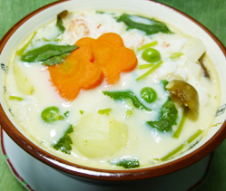

薯蕷（じょうよ）茶わん蒸し
- 調理時間：30 分
- （一人当たり）
- カロリー：194kcal
- たんぱく質：13.6g
- 脂質：3.2g
- 炭水化物：26.6g
- 塩分：1.3g

＜4人分＞
- ゆでうどん
- 1玉
- ホタテ
- 2個
- エビ
- 2尾
- 生しいたけ（細切り）
- 1枚
- ニンジン（花型で抜く）
- 30g
- 三つ葉（２ｃｍ幅に切る）
- 2本
- ・卵
- 1個
- ・だし汁
- 200ml
- ・薄口しょうゆ
- 小さじ1
- ・塩
- 小さじ1/4
- ・山いも（すりおろす）
- 100g
★卵液

- 卵液をつくる
1.だし汁に薄口しょうゆ、塩、みりんを加えて火にかけ、一旦煮立てた後、冷ましておく。
2.ボウルに卵を割り、溶き、冷ましただし汁と山いもを加えてよく合わせる。 - エビは殻をむいて背ワタをとる。ホタテは塩水で洗っておく。
ゆでうどん、は食べやすい長さに切る。
生しいたけは細切り。ニンジンは花型で抜く。三つ葉は２cm幅に切る。 - ご飯茶わんよりも少し大きめの器に三つ葉以外の②を盛り付け、卵液を注ぎ入れる。
- 蒸し器で12～15分ぐらい蒸し、中まで固まれば火を止め、仕上げに三つ葉をのせて少し蒸らす。
薯蕷（じょうよ）茶わん蒸し
薯蕷とは、大和芋、山芋、つくね芋など指します。
薯蕷は、蒸すとふくらむ性質があり、加熱によってうま味が強くなります。さらに茶わん蒸しは、卵の固まる力を利用して、しっとり軟らかいながらも具を包み込んだ上品で温かい夜食にぴったりの一品です。
三寒四温を繰り返すこの時期は、体調を崩しがち。
環境に慣れない身体は調子をととのえる栄養素を求め始めます。山芋に含まれるアミラーゼやジアスターゼなどの食物酵素が消化吸収を助け、老廃物の排泄を促すため、デトックスの春におススメの食材です。